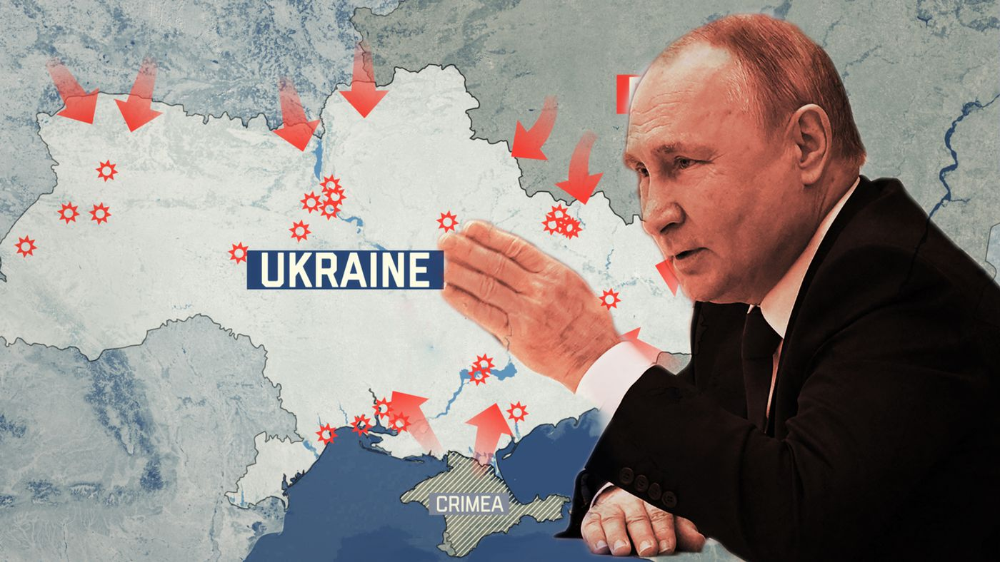
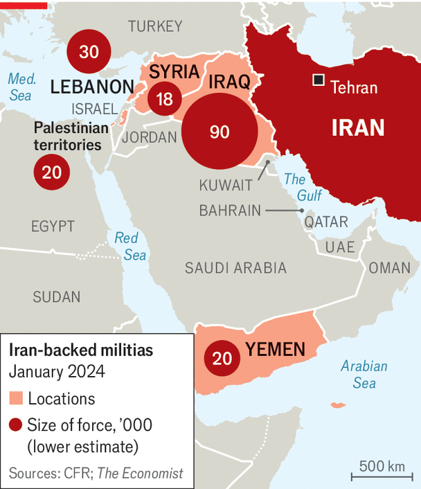

Make a list of positive and negative things the US has done on the world stage in the last 10 years.
Justin Leinaweaver (Spring 2026)
Name
Year in school
Major
“Important” international events are…
LO 1: The big ideas and basic definitions of the field
LO 2 & 3: To use the tools of social scientists
LO 4: To write convincing arguments
Arguments, Evidence and International Relations
Making logical arguments,
Testing those arguments scientifically, and
Learning to think in terms of models
Why Are There Wars?

Why is it so Hard to Cooperate With Other Countries?
What is the Future of Transnational Politics and IR?
Arguments, Evidence and International Relations
Why Are There Wars?
Why is it so Hard to Cooperate With Other Countries?
What is the Future of Transnational Politics and IR?